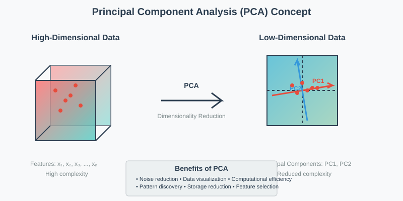
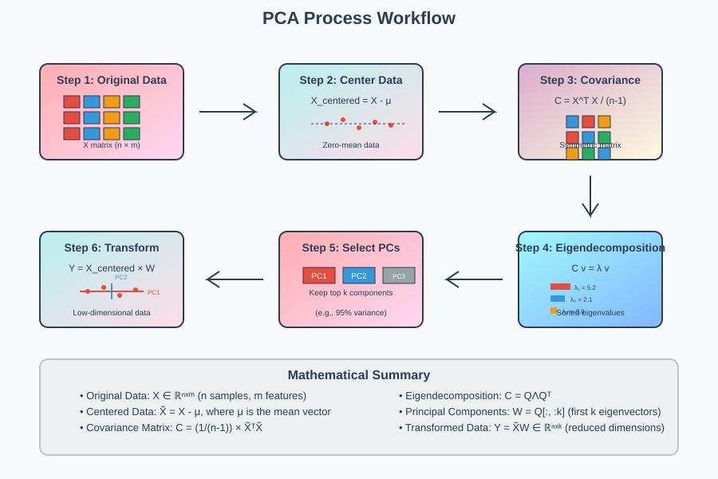
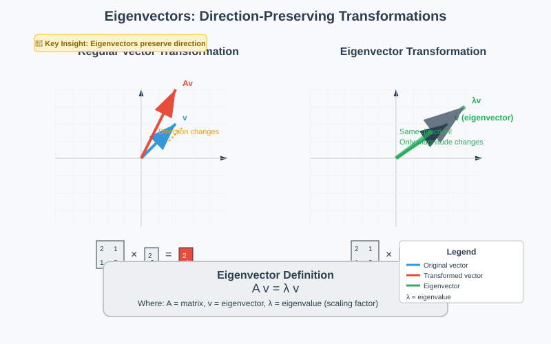
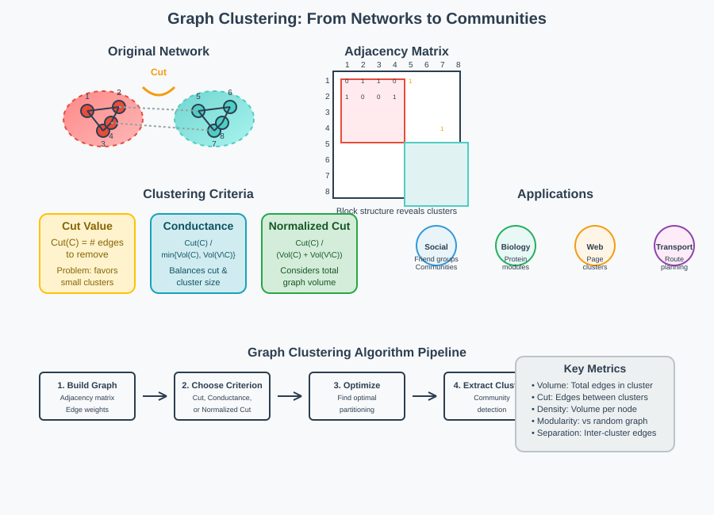
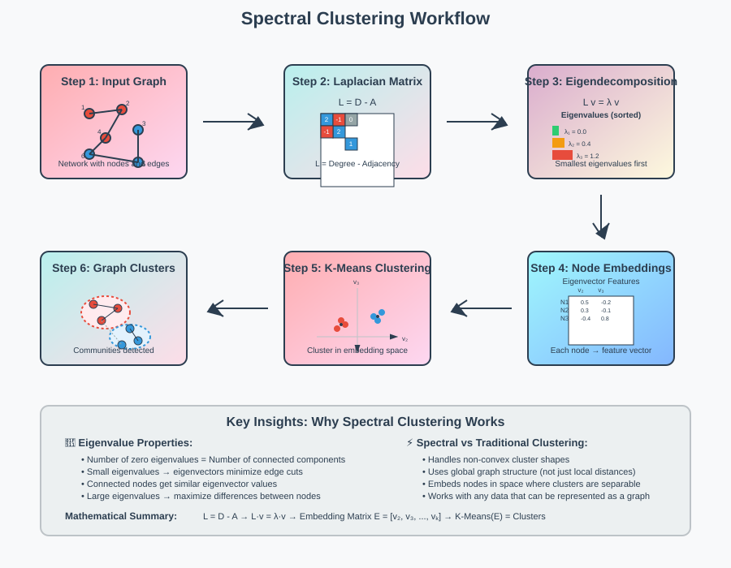
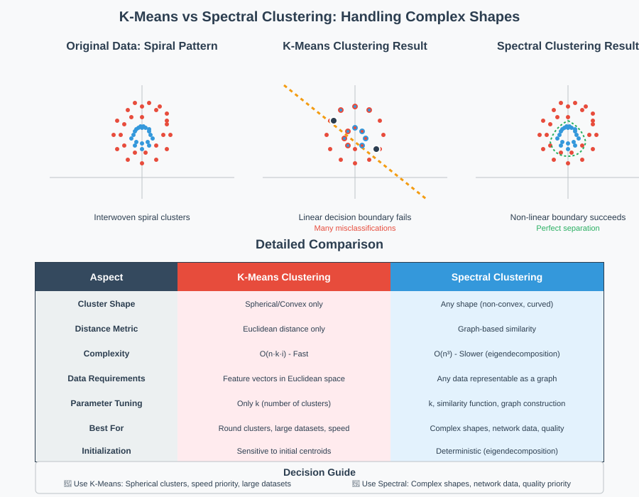

Dimensionality Reduction: PCA and Spectral Clustering


📖 Quick Navigation
- Introduction to Dimensionality Reduction
- Principal Component Analysis (PCA)
- The Magic of Eigenvectors
- Clustering in Graphs and Networks
- Spectral Clustering
- Applications and Examples
- Comparison: K-Means vs Spectral Clustering
- Implementation Guidelines
- References & Further Reading
🎯 Introduction to Dimensionality Reduction
In machine learning, we are always interested in finding major patterns in datasets. When dealing with high-dimensional data, not all variables are useful for finding patterns, and many variables may be correlated, capturing the same underlying information.
Dimensionality Reduction is the method of reducing the number of variables to gain insights without losing much information. This technique is crucial for:
- Data Visualization: Reducing high-dimensional data to 2D or 3D for plotting
- Noise Reduction: Filtering out irrelevant information
- Computational Efficiency: Reducing processing time and storage requirements
- Pattern Discovery: Revealing hidden structures in data

Key Benefits
- Computational Efficiency: Faster algorithms on reduced data
- Storage Reduction: Less memory required
- Visualization: Ability to plot high-dimensional data
- Noise Filtering: Removal of irrelevant features
- Curse of Dimensionality: Mitigating issues in high-dimensional spaces
🔍 Principal Component Analysis (PCA)
PCA is one of the most widely used dimensionality reduction techniques. It finds the directions (principal components) along which the data varies the most.
Understanding PCA with an Example
Consider a dataset of holiday destination ratings given by 6 people to 4 different destinations:
| Person | Alpine Spa | Himalayas | Hawaii | Scuba |
|---|---|---|---|---|
| Anne | 20 | 4 | 16 | 0 |
| Bill | 10 | 2 | 18 | 10 |
| Chris | 13 | 1 | 19 | 7 |
| Jen | 1 | 13 | 7 | 19 |
| Joe | 18 | 10 | 10 | 2 |
| Maggie | 4 | 20 | 0 | 16 |
Discovering Hidden Patterns
From this data, we can identify two main patterns:
Pattern 1: Adventure Factor (-1, +1, -1, +1) - Positive values for Himalayas and Scuba diving - Represents adventurous activities
Pattern 2: Mountain Preference (+1, +1, -1, -1) - Positive values for Alpine Spa and Himalayas - Represents preference for mountainous locations
Mathematical Foundation
The mean ratings for each destination:
Alpine Spa: (20+10+13+1+18+4)/6 = 11.0
Hawaii: (16+18+19+7+10+0)/6 = 11.7
Himalayas: (4+2+1+13+10+20)/6 = 8.3
Scuba: (0+10+7+19+2+16)/6 = 9.0
We can represent each person's preferences as:
Rating = Mean + a×(Pattern 1) + b×(Pattern 2)
For Anne: - Alpine Spa: 20 = 11.0 + a×(-1) + b×(1) - Hawaii: 4 = 8.3 + a×(1) + b×(1) - Himalayas: 16 = 11.7 + a×(-1) + b×(-1) - Scuba: 0 = 9.0 + a×(1) + b×(-1)
Solving these equations: a = -6.7, b = 2.4

⚡ The Magic of Eigenvectors
Eigenvectors are the mathematical foundation that makes PCA work. They help us find the directions where features co-vary the most together.
What are Eigenvectors?
When we multiply a matrix A with a vector x, we typically get another vector with different direction and magnitude. However, for special vectors called eigenvectors, only the magnitude changes while the direction remains the same.
Mathematical Definition:
A × x = λ × x
Where:
- A is the matrix
- x is the eigenvector
- λ (lambda) is the eigenvalue

Computing PCA using Eigenvectors
Step 1: Build the Covariance Matrix
First, compute the mean rating for each destination, then find deviations from the mean for each person's ratings.
Step 2: Calculate Covariance
For each pair of destinations, compute covariance as the sum of products of deviations.
Step 3: Find Eigenvectors
The eigenvectors of the covariance matrix are the principal components. The eigenvalue indicates the importance of each component.
Eigenvalues and Principal Components
- Largest eigenvalue → Most important principal component
- Second largest eigenvalue → Second most important component
- And so on...
The eigenvectors with the largest eigenvalues capture the major directions of variance in the data.
Key Properties
- Number of eigenvalues = Number of features in original data
- Eigenvectors are orthogonal (perpendicular to each other)
- Eigenvalues indicate importance (larger = more variance captured)
- Principal components are ordered by eigenvalue magnitude
🕸️ Clustering in Graphs and Networks
Graph clustering extends dimensionality reduction concepts to network data, where we don't have traditional features but only know connections between nodes.
Graph Fundamentals
- Node: Each data point in the graph
- Edge: Connection between two nodes
- Weight: Strength of relationship between nodes
- Volume: Number of edges within a cluster
Defining Good Clusters
A good cluster in a graph should satisfy two criteria:
- High Internal Density: Many edges within the cluster
- Low External Connectivity: Few edges between different clusters
Cut-Based Criteria
Cut Value: Number of edges that need to be removed to separate a cluster from the rest of the graph.
However, cut value alone is insufficient. Consider an outlier node with cut value 1 - it's not a meaningful cluster.
Advanced Clustering Criteria
1. Conductance
Conductance(C) = Cut(C) / min{Volume(C), Volume(V\C)}
2. Normalized Cut
Ncut(C) = Cut(C) / (Volume(C) + Volume(V\C))
Both criteria balance cluster size with separation quality by dividing cut by a measure of volume.
Adjacency Matrix
An N×N matrix where N is the number of nodes: - Value = 1 if edge exists between nodes - Value = 0 if no edge exists
When nodes are ordered by cluster, the matrix shows a clear block structure.

Other Clustering Approaches
Modularity Clustering: Compares edge density within clusters to a random baseline graph.
Correlation Clustering: Uses similarity measures between node pairs to determine cluster membership.
🎭 Spectral Clustering
Spectral clustering uses eigenvectors to find the global connectivity structure of graphs, extending PCA concepts to network analysis.
The Laplacian Matrix
The Graph Laplacian is the key matrix for spectral clustering:
- Diagonal elements: Degree of each node (number of connections)
- Off-diagonal elements: -1 if edge exists, 0 otherwise
Construction Example:
For a graph with 6 nodes, the Laplacian matrix captures the connectivity structure where each row/column represents a node.
Eigenvector Properties for Graphs
Key Relationship: The number of zero eigenvalues equals the number of connected components in the graph.
Example: A graph with 3 disconnected components will have 3 zero eigenvalues.
Spectral Embedding
Eigenvectors provide new feature representations for nodes:
- Each eigenvector gives one feature value per node
- Concatenating values from multiple eigenvectors creates a feature vector
- Smallest eigenvalues are most important (opposite of PCA)
Visualization Effects
Small Eigenvalues: - Minimize differences between connected nodes - Place connected nodes close together - Preserve cluster structure
Large Eigenvalues:
- Maximize differences between connected nodes
- Place connected nodes far apart
- Emphasize graph cuts

Spectral Clustering Algorithm
1. Compute Laplacian Matrix
2. Find eigenvectors with smallest eigenvalues
3. Create node embeddings using eigenvector values
4. Apply K-Means clustering on embeddings
Mathematical Insight
Eigenvectors minimize/maximize the sum:
∑(edges) (value(i) - value(j))²
- Small eigenvalues: Minimize this sum (similar values for connected nodes)
- Large eigenvalues: Maximize this sum (different values for connected nodes)
🎨 Applications and Examples
1. Eigenfaces (Computer Vision)
PCA can represent face images using linear combinations of "eigenfaces":
- Convert images to pixel vectors
- Apply PCA to find principal components
- Eigenfaces = Principal components of face images
- Any face can be reconstructed using weighted combinations of eigenfaces
Benefits: - Dimensionality reduction for face recognition - Compression of image data - Noise reduction in facial images
2. Population Genetics
Study: Analyzing genetic variations in 1,400 Europeans
- Original data: ~200,000 genetic features per person
- PCA reduction: 2 principal components
- Result: Geographic clustering that correlates with actual European geography
This demonstrates how PCA can reveal hidden geographical patterns in genetic data.
3. Social Network Analysis
Applications: - Epidemic modeling: Understanding how diseases spread through networks - Trend analysis: Tracking how opinions and trends propagate - Community detection: Finding groups of closely connected users
4. Biological Networks
Protein interaction networks: - Clusters of proteins indicate functional modules - Spectral clustering reveals biological pathways - Disease analysis through network disruptions
⚖️ Comparison: K-Means vs Spectral Clustering

K-Means Clustering
Strengths: - Simple and fast algorithm - Works well for spherical clusters - Low computational complexity
Limitations: - Assumes clusters are round/spherical - Cannot handle complex cluster shapes - Distance-based similarity only
Spectral Clustering
Strengths: - Handles arbitrary cluster shapes - Works with non-Euclidean data - Captures global graph structure - Superior for curved or connected clusters
Process: 1. Convert data to graph representation 2. Compute Laplacian matrix 3. Find eigenvectors (create new features) 4. Apply K-Means on new features
Limitations: - Higher computational complexity - Requires graph construction parameters - More complex to tune and implement
When to Use Each
Use K-Means when: - Clusters are roughly spherical - Fast processing is required - Data is in Euclidean space - Simple interpretability is needed
Use Spectral Clustering when: - Clusters have complex shapes - Data has network/graph structure - Non-linear relationships exist - Quality is more important than speed
🛠️ Implementation Guidelines
PCA Implementation Steps
# 1. Standardize the data
data_centered = data - np.mean(data, axis=0)
# 2. Compute covariance matrix
cov_matrix = np.cov(data_centered.T)
# 3. Find eigenvalues and eigenvectors
eigenvalues, eigenvectors = np.linalg.eig(cov_matrix)
# 4. Sort by eigenvalues (descending)
idx = eigenvalues.argsort()[::-1]
eigenvalues = eigenvalues[idx]
eigenvectors = eigenvectors[:, idx]
# 5. Transform data
pca_data = data_centered.dot(eigenvectors[:, :n_components])
Spectral Clustering Implementation
# 1. Create neighborhood graph
from sklearn.neighbors import kneighbors_graph
graph = kneighbors_graph(data, n_neighbors=10, mode='connectivity')
# 2. Compute Laplacian matrix
laplacian = graph_laplacian(graph, normed=True)
# 3. Find smallest eigenvectors
eigenvalues, eigenvectors = eigsh(laplacian, k=n_clusters, which='SM')
# 4. Apply K-Means on embeddings
from sklearn.cluster import KMeans
kmeans = KMeans(n_clusters=n_clusters)
labels = kmeans.fit_predict(eigenvectors)
Parameter Selection Guidelines
For PCA: - Number of components: Based on explained variance ratio - Typically retain: 80-95% of total variance
For Spectral Clustering: - Number of neighbors: 5-20 for graph construction - Similarity function: Gaussian with appropriate bandwidth - Number of clusters: Use eigenvalue gaps to determine
Best Practices
- Data Preprocessing: Always center and potentially scale data
- Dimensionality: Start with 2-3 components for visualization
- Validation: Use multiple metrics to evaluate clustering quality
- Hyperparameter Tuning: Grid search for optimal parameters
- Stability: Run multiple times with different initializations
📚 References & Further Reading
-
Jolliffe, I.T. (2002). Principal Component Analysis - Comprehensive textbook on PCA theory and applications
-
Von Luxburg, U. (2007). A tutorial on spectral clustering - Statistics and Computing, seminal paper on spectral clustering
-
Ng, A.Y., Jordan, M.I., & Weiss, Y. (2002). On spectral clustering - NIPS paper introducing normalized spectral clustering
-
Turk, M., & Pentland, A. (1991). Eigenfaces for recognition - Classic paper on eigenfaces application
-
Scikit-learn Documentation - Practical implementation guides for PCA and spectral clustering
-
Newman, M.E.J. (2010). Networks: An Introduction - Comprehensive book on network analysis and graph clustering
-
Hastie, T., Tibshirani, R., & Friedman, J. (2009). The Elements of Statistical Learning - Chapter 14 covers unsupervised learning methods
-
Févotte, C., & Idier, J. (2011). Algorithms for nonnegative matrix factorization - ArXiv paper on advanced matrix factorization techniques
This documentation provides a comprehensive guide to dimensionality reduction techniques, from basic PCA to advanced spectral clustering methods. The mathematical foundations and practical applications make it suitable for both researchers and practitioners in machine learning and data science.